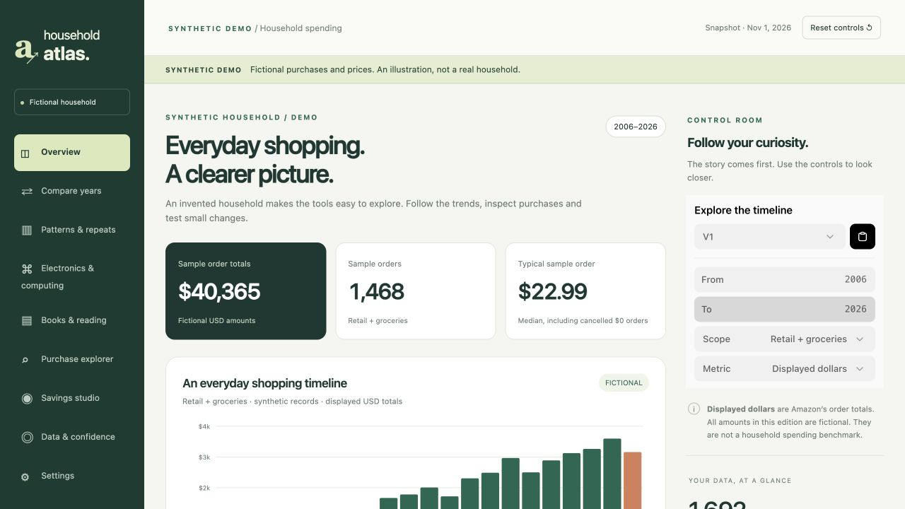

Am I spending more—or just shopping differently?
Compare the same months across years. Separate more orders from larger average orders and a changing mix of purchases.
Find the driver before choosing a fix.
PERSONAL ANALYTICS · PUBLIC DEMO
Your order history already holds the raw material. Household Atlas explores what happens when an AI agent turns it into a personal website: a clear story, beautiful interactive views, and evidence you can follow to decide what deserves your money.
FROM ORDER HISTORY TO USEFUL QUESTIONS
A way to decide what to look at next.
No judgment about what you should value.
Compare the same months across years. Separate more orders from larger average orders and a changing mix of purchases.
Find the driver before choosing a fix.
Look at order sizes and frequency alongside the occasional large purchase. See which deserves more of your attention.
Put your effort where it can matter.
Surface recurring products and categories. Replenishing a staple may be useful; another replacement may deserve a closer look.
Decide which repeats deserve a closer look.
Inspect recorded returns and refund evidence. Look for products worth reviewing, while keeping missing refund information visible.
Spot friction as well as spending.
Explore busy months, quieter stretches, and category shifts. The record can reveal timing; you supply the reasons behind it.
Plan for the peaks you can anticipate.
Try a smaller discretionary budget or a subscription pause. Change the assumptions and see how much the scenario would change.
Make a deliberate tradeoff, with numbers.
An order history shows what was ordered and what the record says. It cannot tell you whether an item was loved, needed, or wasted. Those are your judgments to make.
TWO WAYS TO LOOK CLOSER
New in the demo: electronics, books,
and the shift from page to audio.
A monitor is easy to remember. The cables, chargers, peripherals and project parts can disappear into the background. Follow that ecosystem across years, inspect repeat products, and look at return friction alongside order totals.
Watch topics grow, fade, or stay present across print, Kindle and audio. Trace a subject to its titles. Give audiobook purchases their own timeline, with credit redemptions and membership funding kept distinct.
These stories come from an independently invented catalog, not an anonymized household. Purchase history can suggest a useful review; it cannot prove waste, reading completion, or why someone bought an item.
THE EXPERIENCE
These are real screenshots of the working app.
Every purchase and price shown is fictional.

TRY IT WITH YOUR OWN HISTORY
Try the brief that starts the process. The next step is a downloadable skill that packages the calculations, design system, and quality checks. That reusable workflow is planned; this demo shows the experience we are aiming to make repeatable.
I’m signed into Amazon in Chrome. Help me understand my shopping habits and create a private, interactive report from my order history. First, verify that you can read my signed-in Orders tab and save files locally. If you cannot, explain what access I need to enable or how to proceed with an Amazon data export. Ask whether to include just my orders or the whole household. Use the earliest history actually available. Tell me which years and records you captured, what is missing, and what each measure means. Keep displayed order totals, known refunds, and money actually paid distinct. Never treat a missing value as zero or invent data to fill a gap. Find up to five evidence-backed insights, choosing only what the data supports: how spending and order frequency changed, whether small orders add up, recurring products and categories, seasonal patterns, and recorded returns. Compare matching calendar periods. Explain classification uncertainty. Don’t infer life events or label a purchase wasteful from the order record alone. Where the records support it, add category deep dives: electronics and computing (equipment versus accessories, repeated products, returns) and books (topic shifts and continuity across print, ebooks and audio, audiobook purchase trends, credit use and separate membership costs). A purchase is not evidence of reading completion or waste. Build a visually compelling local website with interactive charts, searchable orders, comparisons, and a savings what-if tool. Show assumptions, tradeoffs, and the arithmetic behind savings estimates. Let me trace findings to the underlying records. Give the site a coherent visual identity, clear typography, thoughtful empty and error states, responsive layouts, and restrained microinteractions. Respect reduced-motion preferences; keep filters immediate and show loading only while real work is pending. Save the purchase data as CSV and JSON, along with source references, collection dates, and coverage notes, in a private local project for future analysis. Don’t purchase, cancel, return, message anyone, or publish my data. If I later ask for a public demo, generate an independent fictional household. Do not reuse my names, products, prices, dates, totals, or behavioral patterns—even scaled or renamed.
KEEP THE CONVERSATION GOING
THE BUILD NOTES · FOR THE TECHNICALLY CURIOUS
Built through a conversation with ChatGPT and Codex.
Here is how questions became an explorable record.
“Help me understand my shopping history. Find the trends, make the evidence explorable, and give me useful ways to think about saving.”
A report grew into a website, then into a separate public demo.
Codex worked with the signed-in browser to capture order-history pages, then wrote Python scripts to normalize the records into CSV, JSON, and SQLite. Source references and capture metadata made it possible to trace an observation back to its evidence.
PAGE CAPTURES → STRUCTURED LOCAL DATAWe defined counts, displayed totals, refunds, and missing values before drawing conclusions. Matching calendar periods makes comparisons useful. Refunds remain separate from displayed totals; a repeated purchase does not automatically mean waste.
DEFINITIONS → CALCULATIONS → CHECKSChatGPT helped shape the narrative and visuals. Codex implemented the app in HTML, CSS, and JavaScript, with Python producing a self-contained build. DialKit supplies the interactive controls for years, channels, and savings assumptions.
STORY → CHARTS → INTERACTIVE QUESTIONSWe refined the design toward findings the records could support. Browser checks exercised comparisons, category drilldowns, book-topic timelines, audiobook payment evidence, review flags, and exports. Automated checks covered calculation rules and the separation between the private app and its synthetic public edition.
RENDER → INSPECT → REVISE → VERIFYTHE QUALITY BAR
Findings lead. Controls respond immediately. Small transitions keep you oriented; clear empty states help you recover. Reduced-motion preferences are respected. The next test is whether a reusable skill can deliver that level of care across very different shopping histories, with little intervention.
Available now: working synthetic demo + starting prompt.
Planned: downloadable skill + published tests of effort, accuracy, and design quality.
AI helped build the project. Exploring the finished demo runs ordinary browser code. It makes no AI requests and needs no API key.
A PUBLIC DEMO WITH ITS OWN DATA
Share the experience while keeping
the original household record private.
Invented dates, prices,
products and returns.
Charts, details, exports,
and scenario tools.
The demo is generated independently. It is not a scaled, shuffled, or renamed version of an actual household. Its annual shopping budget and patterns are illustrative, not a measured average for any population.
The public file contains no original orders, identifiers, source paths, personal findings, or private-mode switch. Its exports are labeled synthetic. The project’s source repository remains private.
WHAT THE PROJECT TAUGHT US
Definitions are part of the product. “Spend” can mean an order total, merchandise value, or money actually paid. The interface needs to say which one it knows.
Context changes the story. A larger total can come from higher order frequency, bigger baskets, or a different shopping mix. The explorer lets you separate those possibilities.
Privacy is a build boundary. A separate synthetic artifact makes public demonstrations possible without hiding real records behind a display toggle.
YOUR TURN TO EXPLORE
The downloadable demo works offline. All displayed data is fictional.